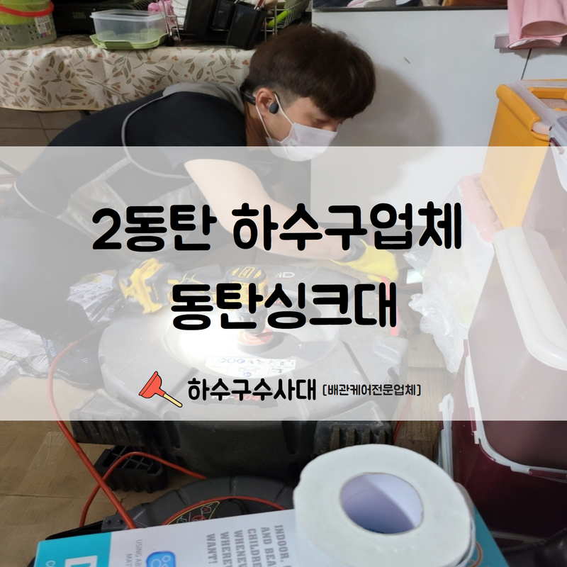

🏠 2동탄 하수구업체 동탄싱크대 간단하지만 확실한 시공을 진행해드립니다!
화성 싱크대막힘 전문 시공 후기

📋 작업 개요
- 위치: 화성
- 서비스 유형: 싱크대막힘, 변기막힘, 하수구막힘, 배관막힘, 맨홀막힘, 역류해결
- 작업 일시: 2022. 8. 21. 18:19
- 업체명: 하수구수사대 (010-5615-2118)
🔍 문제 상황
안녕하세요.하수구수사대 입니다.반갑습니다.
우리는 집, 학교, 회사 등 우리가 방문하는 건물에 화장실이 존재하지 않는 곳은 절대 없습니다. 상가나 회사 등 건물은 많은 사람이 사용하는 공간으로 화장실 역시 이용 빈도수가 매우 높습니다.
2동탄 하수구업체 동탄싱크대 관련 말씀드려보겠습니다.
건물 내부에서 싱크대 및 변기가 자주 막히고 역류가 발생한다면 한 건물 내에서도 여러 곳에서 하수구막힘이 발생하는 현장에는 메인 배관이 막혀있을 수 있다고 예측해 볼 수 있습니다.
일반 가정집 뿐만 아니라 규모가 큰 상가 또는 회사 등의 건물도 하수구막힘이 빈번하게 일어나는 경우가 많은데요.규모가 큰 현장에서는 전체적인 배관의 연관성을 잘 알고 신속하게 조취를 취해주는 것이 중요합니다.

🔎 원인 분석
💡 전문가 진단: 2동탄 하수구업체 동탄싱크대 관련 말씀드려보겠습니다.
연락을 받아 바로 조취를 취했는데요.
하루에도 여러명의 직원들과 각종 협력사데서 방문을 하기에 배수구가 막혀 역류하는 상황이 발생하게 된다면 추후에 더욱 큰 피해를 입게 될 수 있다는 점에 집중해야 합니다.
외진 곳에 위치한 건물이었으며 작업 의뢰해 주신 건물 관리자분의 인솔하에 피해 현장을 점검 해보았습니다. 외관상으로는 크게 문제가 없는 것 같았는데 물을 사용할 때 배수되지 않고 고여있는 상태가 길며 시간이 한참 흘러도 내려갈 생각을 안하여 문의를 주셨다고 하셨습니다.
관로 탐지기가 이용되는 경우도 비일비재 한데요.
이번 현장의 경우 외부에 나와서 곳곳에 위치한 맨홀을 확인했습니다.

🔧 작업 과정
맨홀과 연결되어 있는 관을 통하여 지속적으로 빗물과 여러 이물질이 함께 떠내려와 결국에 맨홀을 꽉 막혀버리게 되었으며 이로 인하여 연결된 메인 배관에도 동시에 피해를 주어 내부에서까지 막히게 된 상태이며 생각보다 이런 상황이 빈번하게 발생합니다.
장마철 비가 많이 오는 날의 경우에는
특히 외부에 설치된 맨홀과 우수관에서 피해가 많이 발생하는데요.빗물로 인해 심각한 역류까지 발생하기도 하며 이번 현장 역시도 맨홀 위쪽으로 물이많이 차오른 상태였습니다.
그래서 내시경 작업도 쉬운 작업이 아니었어요. 2동탄 하수구업체 동탄싱크대 막힘현장을 해결하기에 앞서 맨홀 위로 차오른 물부터 제거해 보기로 하였습니다. 석션기를 이용하여 위로 차오른 물기와 이물질 덩어리를 제거하며 물이 어느 정도 배수되도록 작업해 줍니다.
하수구막힘의 원인은 생각보다 매우 다양합니다.
저희도 유선상으로는 파악할 수 없는 부부늘이 많기 떄문에 자비를 가지고 현장에서 도착해서 면밀히 살펴보아야 어떠한 원인으로 꽉 막혀 있는지는 파악할 수 있는데요.단순히 유선상의 문의만으로는 예측하는데에는 어려움이 있습니다.
현장에서는 다양한 최신 장비를 이용하여 출동하고 있으며 작업 과정에 필요한 다양한 장비를 보유하고 있고 각각의 사용법 역시 부족함 없이 인지하고 있기에 다른 업체보다 훨씬 빠르고 확실한 문제 해결이 가능합니다.
하수구막힘으로 당황스러운 일이 발생하셨다면 고민하지마시고

✅ 작업 완료
하수구수사대를 찾아주시기 바랍니다.
경기도 화성시 동탄대로 677-10 7층 715-A10호
⚠️ 주방 싱크대 배관 막힘 예방 수칙
- ✅ 기름기가 묻은 식기나 프라이팬은 설거지 전 키친타올로 반드시 기름때를 닦아내세요.
- ✅ 주기적으로 싱크대 개수대에 뜨거운 물을 가득 받아 한 번에 내려 배관 내부 기름을 씻어내세요.
- ✅ 배수구 거름망을 미세한 필터로 사용하시고 음식물 찌꺼기가 틈으로 새어 들지 않게 관리하세요.
- ✅ 베이킹소다와 식초를 뜨거운 물과 함께 일주일에 한 번씩 부어주면 배관 살균과 막힘 예방에 좋습니다.
💡 핵심 정리
- 확실한 장비 작업(내시경 점검 및 샤프트 스케일링)으로 원인을 뿌리 뽑습니다.
- 작업 후 1년 이내에 동일한 부위 재발 시 100% 무상 A/S 서비스를 보장합니다.
- 서울 · 경기 · 인천 전 지역에 24시간 언제든 긴급 출동할 수 있도록 항시 대기 중입니다.
❓ 자주 묻는 질문 (FAQ)
🚨 화성 싱크대막힘 문제로 고민이신가요?
정확한 원인 진단과 확실한 시공으로 재발 없는 해결을 약속드립니다.
24시간 긴급 출동 | 서울 · 경기 · 인천 전지역 | 1년 내 재발 시 무상 A/S